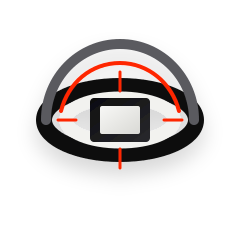
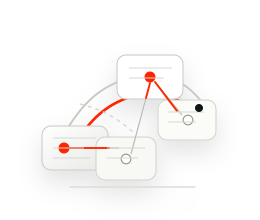

HongXingOS
操作系统与设备软件从 HongXingOS 1 延续至当前版本体系，承担系统运行环境、设备适配、应用兼容、资源调度、版本生命周期及向下兼容工作。
→


Hong Xing 当前公开体系由操作系统、固件、在线服务、身份认证及关联基础设施构成。不同产品线采用独立生命周期管理，并通过服务接口、认证机制与设备适配形成协同。
从 HongXingOS 1 延续至当前版本体系，承担系统运行环境、设备适配、应用兼容、资源调度、版本生命周期及向下兼容工作。

围绕启动流程、后台服务依赖、最小预加载、安全响应与软硬件兼容进行持续优化。2026 年 8 月 12 日开始面向受支持版本推送。

负责在线服务初始化、连接状态检测、恢复与部分请求路径调度。当前公开生命周期显示 Online 2 自 2026 年起进入发布阶段。
覆盖身份认证、多层级权限、终端管理、日志、异常响应、主动干预及远程管理能力；AuthLit 5 于 2026 年进入阶段性发布与更新周期。
HongXingOS 1 至 6 已形成连续生命周期记录。HongXingOS 7 的公开规划强调系统、服务、设备与 Amia 生态之间的进一步协同，并继续推进性能、兼容性及历史代码整理。
固件体系从 o1 延续至 o3。o3 继续承担系统启动、服务调度与兼容性工作，并作为 HongXingOS 7 默认固件的计划组成部分。
Online 1 自 2022 年进入运行周期，随后转入半关闭并最终结束；Online 2 自 2026 年进入发布阶段，承担新一代在线服务连接与调度能力。
AuthLit 从早期版本逐步发展为独立身份认证与安全体系。当前公开记录包含 AuthLit 3、4、5 及 A81 相关更新。
Quick Services 是 o3 Firmware 与 Online2 服务体系中的连接优化层，分别处理启动、连接恢复与路径调度。相关能力只优化 Hong Xing 服务体系内部流程，不替代运营商线路质量或第三方网络条件。
优化 Online2 及相关网络组件的启动和初始化流程，降低系统启动后的网络服务等待。
优化连接建立、状态检测与恢复机制，减少首次连接、重新连接及部分网络切换场景中的重复初始化。
依据连接状态、服务节点可用性与网络条件，对部分请求路径和连接流程进行动态调整。